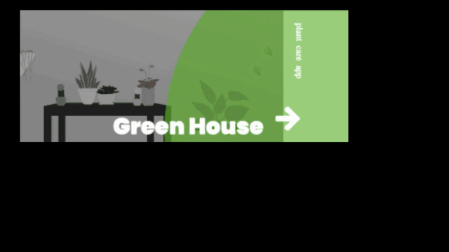

This microinteraction will be for my portfolio website, MG Design
The projects page is made up of project cards that I redesigned for my Beta
There are microinteractions incorporated into this page
The microinteraction I will be adding will function similarly to the example

The microinteraction will be triggered by clicking on the image card and clicking through the project sections on the right.
The project card will fill fully with color and turn away on top
The first page will turn in from below and turn out to the left
The following pages will turn in from the right and turn out from the left
The image card will turn down from top when the x is pressed
The x icon appears on all new pages
The page tabs fade in then stay visible throughout transitions to the right
The user will see the page they are transitioning out of turn away on a cube face and a new page turn in, with the page tabs staying in place, and the x appearing on each new page.
There are no loops in this microinteraction
This microaction utilizes one mode to switch between pages